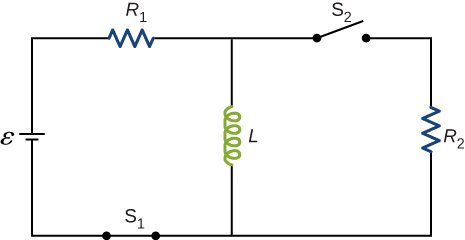

Phy 222 Homework 11: AC Circuits
Problem 11.1
An emf of \(9.7 \times 10^{-3} \, \text{V}\) is induced in a coil while the current in a nearby coil is decreasing at a rate of \(2.7 \, \text{A/s}\). What is the mutual inductance of the two coils?
Problem 11.2
Two coils close to each other have a mutual inductance of \(32 \, \text{mH}\). If the current in one coil decays according to \(I = I_0 e^{-\alpha t}\), where \(I_0 = 5.0 \, \text{A}\) and \(\alpha = 2.0 \times 10^3 \, \text{s}^{-1}\), what is the emf induced in the second coil immediately after the current starts to decay? At \(t = 1.0 \times 10^{-3} \, \text{s}\)?
Problem 11.3
An emf of \(0.40 \, \text{V}\) is induced across a coil when the current through it changes uniformly from \(0.10 \, \text{A}\) to \(0.60 \, \text{A}\) in \(0.30 \, \text{s}\). What is the self-inductance of the coil?
Problem 11.4
A solenoid \(50 \, \text{cm}\) long is wound with \(500\) turns of wire. The cross-sectional area of the coil is \(2.0 \, \text{cm}^2\). What is the self-inductance of the solenoid?
Problem 11.5
For the circuit shown below, \(\varepsilon = 20 \, \text{V}\), \(L = 4.0 \, \text{mH}\), and \(R = 5.0 \, \Omega\). After steady state is reached with \(S_1\) closed and \(S_2\) open, \(S_2\) is closed and immediately thereafter (at \(t = 0\)) \(S_1\) is opened. Determine
- the current through \(L\) at \(t = 0\)
- the current through \(L\) at \(t = 4.0 \times 10^{-4} \, \text{s}\)
- the voltages across \(L\) and \(R_2\) at \(t = 4.0 \times 10^{-4} \, \text{s}\). \(R_1 = R_2 = R\).

Problem 11.6
How long after switch \(S_1\) is thrown does it take the current in the circuit shown to reach half its maximum value? Express your answer in terms of the time constant of the circuit.

Problem 11.7
For the circuit shown below, find the current through the inductor \(2.0 \times 10^{-5} \, \text{s}\) after the switch is reopened.

Problem 11.8
The self-inductance and capacitance of an LC circuit are \(0.20 \, \text{mH}\) and \(5.0 \, \text{pF}\). What is the angular frequency at which the circuit oscillates?
Problem 11.9
An LC circuit in an AM tuner (in a car stereo) uses a coil with an inductance of \(2.5 \, \text{mH}\) and a variable capacitor. If the natural frequency of the circuit is to be adjustable over the range \(540 \, \text{kHz}\) to \(1600 \, \text{kHz}\) (the AM broadcast band), what range of capacitance is required?
Problem 11.10
Calculate the reactance of a \(5.0 \, \mu\text{F}\) capacitor at
- \(60 \, \text{Hz}\)
- \(600 \, \text{Hz}\)
- \(6000 \, \text{Hz}\)
Problem 11.11
Calculate the reactance of a \(5.0 \, \text{mH}\) inductor at
- \(60 \, \text{Hz}\)
- \(600 \, \text{Hz}\)
- \(6000 \, \text{Hz}\)
Problem 11.12
What is the impedance of a series combination of a \(50 \, \Omega\) resistor, a \(5.0 \, \mu\text{F}\) capacitor, and a \(10 \, \mu\text{F}\) capacitor at a frequency of \(2.0 \, \text{kHz}\)?
Problem 11.13
In an RLC series circuit, the voltage amplitude and frequency of the source are \(100 \, \text{V}\) and \(500 \, \text{Hz}\), respectively, and \(R = 500 \, \Omega\), \(L = 0.20 \, \text{H}\), and \(C = 2.0 \, \mu\text{F}\).
- What is the impedance of the circuit?
- What is the amplitude of the current from the source?
- If the emf of the source is given by \(v(t) = (100 \, \text{V}) \sin(1000\pi t)\), how does the current vary with time?
- Repeat the calculations with \(C\) changed to \(0.20 \, \mu\text{F}\).
Problem 11.14
What is the impedance of an RLC series circuit at the resonant frequency?
Problem 11.15
A transformer is used to step down \(110 \, \text{V}\) from a wall socket to \(9.0 \, \text{V}\) for a radio.
- If the primary winding has \(500\) turns, how many turns does the secondary winding have?
- If the radio operates at a current of \(500 \, \text{mA}\), what is the current through the primary winding?
Problem 11.16
Consider a power plant located \(25 \, \text{km}\) outside a town delivering \(50 \, \text{MW}\) of power to the town. The transmission lines are made of aluminum cables with a \(7 \, \text{cm}^2\) cross-sectional area. Find the loss of power in the transmission lines if it is transmitted at
- \(200 \, \text{kV}\) (rms)
- \(120 \, \text{V}\) (rms).
\(~\)